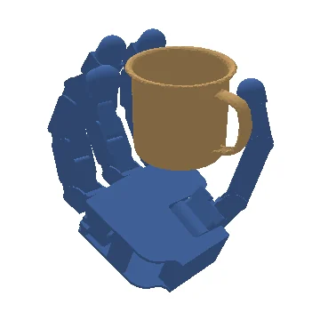
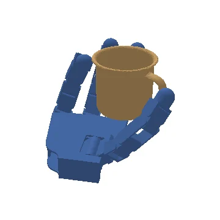
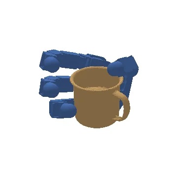

Overview
Robot hands and grippers do not share a joint space. Their topology, actuation coupling and contact geometry all differ. EAGG aligns that structure inside one generator instead of suppressing it.
- 56.17%
- Average grasp success across six training end effectors, with one unified model.
- 1.10pp
- Gap to specialized, per-embodiment training on the same end effectors.
- 0.189cm
- Pooled median contact distance with iterative geometry injection, down from 0.239 cm.
- 95.00%
- Best real-world success rate, on three hardware setups (89.06–95.00%).
Video
Watch it grasp across embodiments.
Generated grasps on everyday objects, the same model moving between grippers and hands, and the effect of geometry-aware conditioning.
Cross-end-effector grasp generation seeks a unified model that generalizes across objects and across embodiments ranging from parallel grippers to dexterous end effectors. Existing grasp generators are typically designed for a fixed embodiment or encode embodiment identity with a static descriptor, which weakens transfer when topology, actuation coupling, and contact geometry differ substantially.
We present EAGG, an embodiment-aligned grasp generator that represents each embodiment with a topology-aware end-effector graph and an embodiment-specific low-dimensional end-effector control space. A frozen end-effector-cognition backbone converts the current articulated state into geometry-aware tokens that act as a reusable morphology prior, and iterative geometry injection refreshes these tokens throughout sampling so that conditioning remains synchronized with the evolving end-effector geometry.
On the MultiGripperGrasp benchmark, EAGG reaches 56.17% average success across six training end effectors, remaining within 1.10 percentage points of specialized training while preserving transfer to finetuning and zero-shot end effectors. Iterative geometry injection further reduces the pooled median contact distance from 0.239 cm to 0.189 cm. These results show that cross-end-effector grasp generation is strengthened by aligning embodiment structure inside a shared generator rather than suppressing embodiment differences.
Method
How EAGG reads a hand.
Scroll through the architecture. Each step zooms into the part of the model that makes the generator embodiment-aware.
-
00 · Overview
One transformer, three kinds of tokens.
Object points become object tokens, the end-effector graph becomes hand tokens, and a transformer backbone denoises grasp tokens from noise x1 to a clean grasp x0.
-
01 · Control basis
Each end effector keeps its own control space.
Grasps are expressed in an embodiment-specific, PCA-based low-dimensional control space. Mean-joint and synergy terms enter the per-node features, so no hand is forced into another hand's raw joint parameterization.
-
02 · Topology-aware graph
The hand is a graph, not a label.
Actuated joints become graph nodes carrying kinematic and geometric features, so kinematic organization, actuation coupling and embodiment-specific structure stay explicit.
-
03 · Cognition backbone
A frozen prior for morphology.
A GNN and a frozen end-effector-cognition backbone ΦE turn the current articulated state into geometry-aware hand tokens: a reusable morphology prior.
-
04 · Iterative geometry injection
Geometry refreshed at every step.
The current estimate xt re-poses the canonical hand point cloud. The transformed cloud flows back through ΦE, keeping the hand tokens synchronized with the evolving contact and collision geometry.
Explorer
Pick a hand. Pick an object.
On the left, the two inputs: the object point cloud and the end effector's point cloud with its joint graph. On the right, the top three of 256 sampled grasps (10 denoising steps), ranked by geometric quality.
Allegro Mug
Top 3 of 256 samples
#1 of 256
#2
#3End effector
each grasping the mug
Object
each grasped by Allegro
Results
From simulation to real hardware.
Evaluated on the MultiGripperGrasp benchmark across training, finetuned and zero-shot end effectors, then executed on three real robot setups.
Simulation across regimes
One unified model covers six training end effectors and stays within 1.10 points of specialized, per-embodiment models, then transfers to finetuned and zero-shot end effectors.
All metrics
| Regime | #EE | SR (%) | CD (cm) | PD (cm) | CC | RGR (%) |
|---|---|---|---|---|---|---|
| Training, unified | 6 | 56.17 | 0.56 | 1.04 | 2.081 | 3.16 |
| Training, specialized | 6 | 57.27 | 0.40 | 0.79 | 2.254 | 1.21 |
| Held-out, adapted | 2 | 36.68 | 0.36 | 0.62 | 2.196 | 3.63 |
| Zero-shot, adapted | 2 | 33.25 | 0.56 | 0.67 | 2.332 | 0.00 |
| End effector | Model | SR (%) | CD (cm) | PD (cm) | CC | RGR (%) |
|---|---|---|---|---|---|---|
| WSG-50 | Unified | 14.50 | 0.40 | 0.77 | 1.262 | 8.76 |
| Specialized | 16.22 | 0.33 | 0.64 | 1.817 | 1.73 | |
| Robotiq 3F | Unified | 78.42 | 1.14 | 1.48 | 2.512 | 1.20 |
| Specialized | 79.26 | 0.78 | 1.07 | 2.615 | 0.18 | |
| Allegro | Unified | 86.46 | 0.50 | 1.04 | 2.564 | 0.12 |
| Specialized | 87.59 | 0.41 | 0.91 | 2.685 | 0.00 |
SR success rate · CD contact distance · PD penetration depth · CC contact count · RGR repeated grasp rate · #EE end effectors averaged
Real world
Off the benchmark, onto the robot.
EAGG grasps executed with a UR5 and FreedomHand, a UR5 and Dahuan AG95 gripper, and a SOARM 101 arm, on 57 objects in five groups.
Citation
Cite EAGG.
If this work is useful in your research, please cite the paper.
@misc{niu2026eagg,
title = {EAGG: Embodiment-Aligned Grasp Generation via Geometry-Aware Graph Conditioning},
author = {Niu, Wanhao and Ke, Qiyan and Sun, Yuan and Sun, Hao and Xu, Jie and Ma, Muyuan and Hu, Ruiqi and Sun, Fuchun},
year = {2026},
eprint = {2606.18092},
archivePrefix = {arXiv},
primaryClass = {cs.RO},
doi = {10.48550/arXiv.2606.18092},
url = {https://arxiv.org/abs/2606.18092}
}